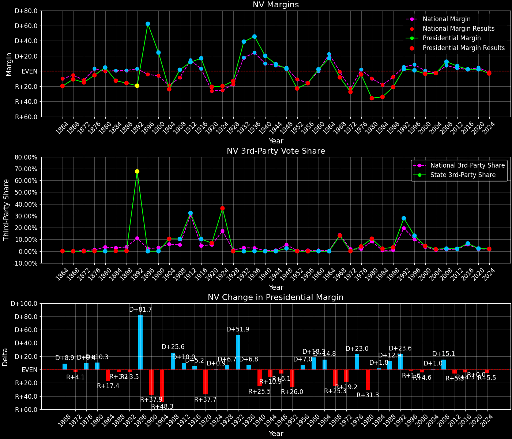
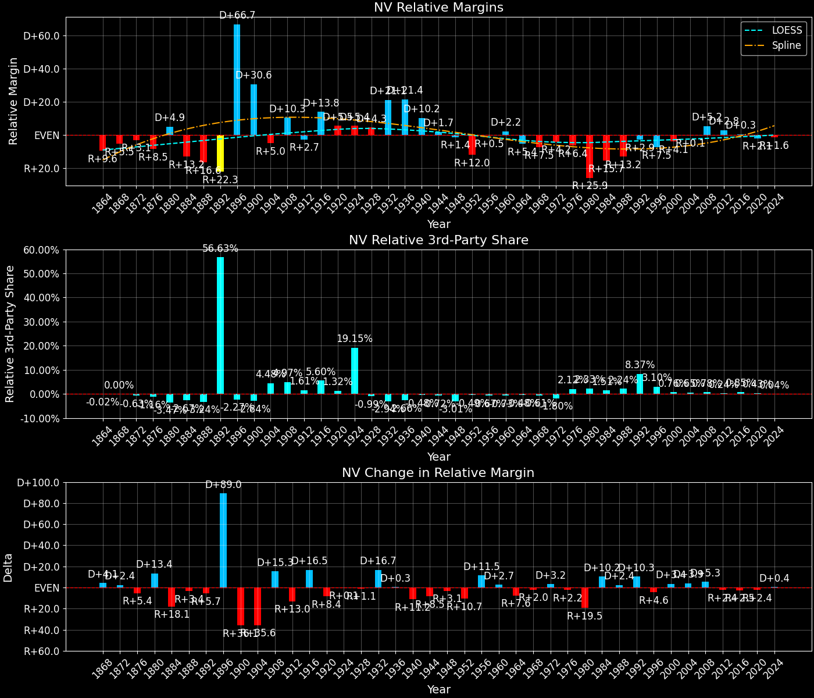
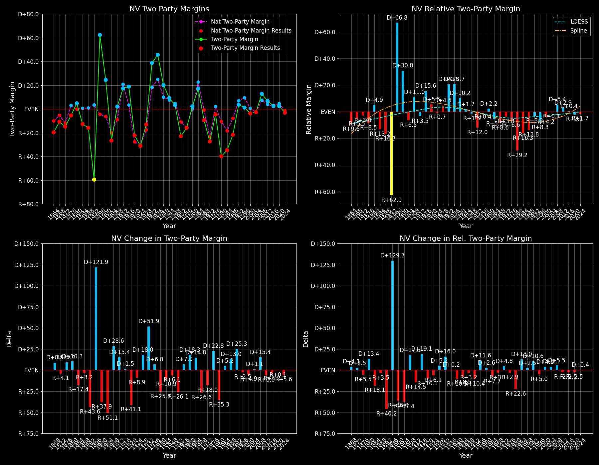

| Year | D | R | State Margin | Nat. Margin | Rel. Margin | Total votes | EVs |
|---|---|---|---|---|---|---|---|
| 1864 | 6,594(40.2%) | 9,826(59.8%) | R+19.7 | R+10.1 | R+9.6 | 16,420 | 3 |
| 1868 | 5,218(44.6%)(Δ -1,376) | 6,480(55.4%)(Δ -3,346) | R+10.8(Δ D+8.9) | R+5.3(Δ D+4.8) | R+5.5(Δ D+4.1) | 11,698(Δ -4,722) | 3 |
| 1872 | 6,236(42.6%)(Δ 1,018) | 8,413(57.4%)(Δ 1,933) | R+14.9(Δ R+4.1) | R+11.8(Δ R+6.5) | R+3.1(Δ D+2.4) | 14,649(Δ 2,951) | 3 |
| 1876 | 9,308(47.3%)(Δ 3,072) | 10,383(52.7%)(Δ 1,970) | R+5.5(Δ D+9.4) | D+3.0(Δ D+14.8) | R+8.5(Δ R+5.4) | 19,691(Δ 5,042) | 3 |
| 1880 | 9,613(52.4%)(Δ 305) | 8,732(47.6%)(Δ -1,651) | D+4.8(Δ D+10.3) | R+0.1(Δ R+3.1) | D+4.9(Δ D+13.4) | 18,345(Δ -1,346) | 3 |
| 1884 | 5,578(43.6%)(Δ -4,035) | 7,193(56.2%)(Δ -1,539) | R+12.6(Δ R+17.4) | D+0.6(Δ D+0.7) | R+13.2(Δ R+18.1) | 12,797(Δ -5,548) | 3 |
| 1888 | 5,149(41.9%)(Δ -429) | 7,088(57.7%)(Δ -105) | R+15.8(Δ R+3.2) | D+0.8(Δ D+0.3) | R+16.6(Δ R+3.4) | 12,278(Δ -519) | 3 |
| 1892 | 714(6.6%)(Δ -4,435) | 2,811(26.1%)(Δ -4,277) | T+40.9(Δ R+3.5) | D+3.0(Δ D+2.2) | R+22.3(Δ R+5.7) | 10,878(Δ -1,400) | 3 |
| 1896 | 8,376(81.2%)(Δ 7,662) | 1,938(18.8%)(Δ -873) | D+62.4(Δ D+81.7) | R+4.3(Δ R+7.3) | D+66.7(Δ D+89.0) | 10,314(Δ -564) | 3 |
| 1900 | 6,347(62.2%)(Δ -2,029) | 3,849(37.8%)(Δ 1,911) | D+24.5(Δ R+37.9) | R+6.1(Δ R+1.8) | D+30.6(Δ R+36.1) | 10,196(Δ -118) | 3 |
| 1904 | 3,982(33.8%)(Δ -2,365) | 6,864(58.3%)(Δ 3,015) | R+23.8(Δ R+48.3) | R+18.8(Δ R+12.7) | R+5.0(Δ R+35.6) | 12,115(Δ 1,919) | 3 |
| 1908 | 11,212(46.5%)(Δ 7,230) | 10,775(44.7%)(Δ 3,911) | D+1.8(Δ D+25.6) | R+8.5(Δ D+10.3) | D+10.3(Δ D+15.3) | 24,526(Δ 12,411) | 3 |
| 1912 | 7,986(47.2%)(Δ -3,226) | 5,620(33.2%)(Δ -5,155) | D+11.8(Δ D+10.0) | D+14.4(Δ D+23.0) | R+2.7(Δ R+13.0) | 20,115(Δ -4,411) | 3 |
| 1916 | 17,776(53.9%)(Δ 9,790) | 12,127(36.8%)(Δ 6,507) | D+17.0(Δ D+5.2) | D+3.1(Δ R+11.3) | D+13.8(Δ D+16.5) | 33,316(Δ 13,201) | 3 |
| 1920 | 9,851(36.2%)(Δ -7,925) | 15,479(56.9%)(Δ 3,352) | R+20.7(Δ R+37.7) | R+26.2(Δ R+29.3) | D+5.5(Δ R+8.4) | 27,194(Δ -6,122) | 3 |
| 1924 | 5,909(21.9%)(Δ -3,942) | 11,243(41.8%)(Δ -4,236) | R+19.8(Δ D+0.9) | R+25.2(Δ D+1.0) | D+5.4(Δ R+0.1) | 26,921(Δ -273) | 3 |
| 1928 | 14,090(43.5%)(Δ 8,181) | 18,327(56.5%)(Δ 7,084) | R+13.1(Δ D+6.7) | R+17.4(Δ D+7.8) | D+4.3(Δ R+1.1) | 32,417(Δ 5,496) | 3 |
| 1932 | 28,756(69.4%)(Δ 14,666) | 12,674(30.6%)(Δ -5,653) | D+38.8(Δ D+51.9) | D+17.8(Δ D+35.2) | D+21.1(Δ D+16.7) | 41,430(Δ 9,013) | 3 |
| 1936 | 31,925(72.8%)(Δ 3,169) | 11,923(27.2%)(Δ -751) | D+45.6(Δ D+6.8) | D+24.3(Δ D+6.5) | D+21.4(Δ D+0.3) | 43,848(Δ 2,418) | 3 |
| 1940 | 31,945(60.1%)(Δ 20) | 21,229(39.9%)(Δ 9,306) | D+20.2(Δ R+25.5) | D+10.0(Δ R+14.3) | D+10.2(Δ R+11.2) | 53,174(Δ 9,326) | 3 |
| 1944 | 29,623(54.6%)(Δ -2,322) | 24,611(45.4%)(Δ 3,382) | D+9.2(Δ R+10.9) | D+7.5(Δ R+2.5) | D+1.7(Δ R+8.5) | 54,234(Δ 1,060) | 3 |
| 1948 | 31,291(50.4%)(Δ 1,668) | 29,357(47.3%)(Δ 4,746) | D+3.1(Δ R+6.1) | D+4.5(Δ R+3.0) | R+1.4(Δ R+3.1) | 62,117(Δ 7,883) | 3 |
| 1952 | 31,688(38.6%)(Δ 397) | 50,502(61.4%)(Δ 21,145) | R+22.9(Δ R+26.0) | R+10.9(Δ R+15.3) | R+12.0(Δ R+10.7) | 82,190(Δ 20,073) | 3 |
| 1956 | 40,640(42.0%)(Δ 8,952) | 56,049(58.0%)(Δ 5,547) | R+15.9(Δ D+7.0) | R+15.4(Δ R+4.5) | R+0.5(Δ D+11.5) | 96,689(Δ 14,499) | 3 |
| 1960 | 54,880(51.2%)(Δ 14,240) | 52,387(48.8%)(Δ -3,662) | D+2.3(Δ D+18.3) | D+0.2(Δ D+15.6) | D+2.2(Δ D+2.7) | 107,267(Δ 10,578) | 3 |
| 1964 | 79,339(58.6%)(Δ 24,459) | 56,094(41.4%)(Δ 3,707) | D+17.2(Δ D+14.8) | D+22.6(Δ D+22.4) | R+5.4(Δ R+7.6) | 135,433(Δ 28,166) | 3 |
| 1968 | 60,598(39.3%)(Δ -18,741) | 73,188(47.5%)(Δ 17,094) | R+8.2(Δ R+25.3) | R+0.7(Δ R+23.3) | R+7.5(Δ R+2.0) | 154,218(Δ 18,785) | 3 |
| 1972 | 66,016(36.3%)(Δ 5,418) | 115,750(63.7%)(Δ 42,562) | R+27.4(Δ R+19.2) | R+23.1(Δ R+22.4) | R+4.2(Δ D+3.2) | 181,766(Δ 27,548) | 3 |
| 1976 | 92,479(47.4%)(Δ 26,463) | 101,273(51.9%)(Δ -14,477) | R+4.4(Δ D+23.0) | D+2.1(Δ D+25.2) | R+6.4(Δ R+2.2) | 201,876(Δ 20,110) | 3 |
| 1980 | 66,666(27.9%)(Δ -25,813) | 155,017(64.8%)(Δ 53,744) | R+35.6(Δ R+31.3) | R+9.7(Δ R+11.8) | R+25.9(Δ R+19.5) | 247,885(Δ 46,009) | 3 |
| 1984 | 91,655(32.4%)(Δ 24,989) | 188,770(66.8%)(Δ 33,753) | R+33.9(Δ D+1.8) | R+18.2(Δ R+8.5) | R+15.7(Δ D+10.2) | 286,667(Δ 38,782) | 4 |
| 1988 | 132,738(38.8%)(Δ 41,083) | 206,040(60.2%)(Δ 17,270) | R+20.9(Δ D+12.9) | R+7.7(Δ D+10.5) | R+13.2(Δ D+2.4) | 350,067(Δ 63,400) | 4 |
| 1992 | 189,148(38.0%)(Δ 56,410) | 175,828(35.3%)(Δ -30,212) | D+2.6(Δ D+23.6) | D+5.6(Δ D+13.3) | R+2.9(Δ D+10.3) | 506,318(Δ 156,251) | 4 |
| 1996 | 203,974(45.6%)(Δ 14,826) | 199,244(44.6%)(Δ 23,416) | D+1.0(Δ R+1.6) | D+8.5(Δ D+3.0) | R+7.5(Δ R+4.6) | 464,279(Δ -42,039) | 4 |
| 2000 | 279,978(46.9%)(Δ 76,004) | 301,575(50.6%)(Δ 102,331) | R+3.5(Δ R+4.6) | D+0.5(Δ R+8.0) | R+4.1(Δ D+3.4) | 608,970(Δ 144,691) | 4 |
| 2004 | 397,190(48.4%)(Δ 117,212) | 418,690(51.0%)(Δ 117,115) | R+2.6(Δ D+1.0) | R+2.5(Δ R+3.0) | R+0.1(Δ D+3.9) | 829,587(Δ 220,617) | 5 |
| 2008 | 533,736(56.0%)(Δ 136,546) | 412,827(43.3%)(Δ -5,863) | D+12.5(Δ D+15.1) | D+7.3(Δ D+9.7) | D+5.2(Δ D+5.3) | 967,848(Δ 138,261) | 5 |
| 2012 | 531,373(52.8%)(Δ -2,363) | 463,567(46.1%)(Δ 50,740) | D+6.7(Δ R+5.8) | D+3.9(Δ R+3.4) | D+2.8(Δ R+2.4) | 1,014,918(Δ 47,070) | 6 |
| 2016 | 539,260(49.5%)(Δ 7,887) | 512,058(47.0%)(Δ 48,491) | D+2.4(Δ R+4.3) | D+2.1(Δ R+1.8) | D+0.3(Δ R+2.5) | 1,125,385(Δ 110,467) | 6 |
| 2020 | 703,486(50.7%)(Δ 164,226) | 669,890(48.3%)(Δ 157,832) | D+2.4(Δ R+0.0) | D+4.5(Δ D+2.4) | R+2.1(Δ R+2.4) | 1,405,376(Δ 279,991) | 6 |
| 2024 | 705,197(48.2%)(Δ 1,711) | 751,205(51.4%)(Δ 81,315) | R+3.1(Δ R+5.5) | R+1.5(Δ R+5.9) | R+1.6(Δ D+0.4) | 1,484,840(Δ 79,464) | 6 |
| Year | D | R | Other votes | State 3rd-Party Share | 3rd-Party Nat. Share | 3rd-Party Rel. Share |
|---|---|---|---|---|---|---|
| 1864 | 6,594(40.2%) | 9,826(59.8%) | 0(0.0%) | 0.00% | 0.02% | -0.02% |
| 1868 | 5,218(44.6%)(Δ -1,376) | 6,480(55.4%)(Δ -3,346) | 0(0.0%) | 0.00% | 0.00% | 0.00% |
| 1872 | 6,236(42.6%)(Δ 1,018) | 8,413(57.4%)(Δ 1,933) | 0(0.0%) | 0.00% | 0.63% | -0.63% |
| 1876 | 9,308(47.3%)(Δ 3,072) | 10,383(52.7%)(Δ 1,970) | 0(0.0%) | 0.00% | 1.16% | -1.16% |
| 1880 | 9,613(52.4%)(Δ 305) | 8,732(47.6%)(Δ -1,651) | 0(0.0%) | 0.00% | 3.47% | -3.47% |
| 1884 | 5,578(43.6%)(Δ -4,035) | 7,193(56.2%)(Δ -1,539) | 26(0.2%) | 0.20% | 2.87% | -2.67% |
| 1888 | 5,149(41.9%)(Δ -429) | 7,088(57.7%)(Δ -105) | 41(0.3%) | 0.33% | 3.57% | -3.24% |
| 1892 | 714(6.6%)(Δ -4,435) | 2,811(26.1%)(Δ -4,277) | 7,264(67.3%) | 67.60% | 10.97% | 56.63% |
| 1896 | 8,376(81.2%)(Δ 7,662) | 1,938(18.8%)(Δ -873) | 0(0.0%) | 0.00% | 2.27% | -2.27% |
| 1900 | 6,347(62.2%)(Δ -2,029) | 3,849(37.8%)(Δ 1,911) | 0(0.0%) | 0.00% | 2.84% | -2.84% |
| 1904 | 3,982(33.8%)(Δ -2,365) | 6,864(58.3%)(Δ 3,015) | 925(7.9%) | 10.47% | 5.99% | 4.48% |
| 1908 | 11,212(46.5%)(Δ 7,230) | 10,775(44.7%)(Δ 3,911) | 2,103(8.7%) | 10.35% | 5.39% | 4.97% |
| 1912 | 7,986(47.2%)(Δ -3,226) | 5,620(33.2%)(Δ -5,155) | 3,313(19.6%) | 32.36% | 30.74% | 1.61% |
| 1916 | 17,776(53.9%)(Δ 9,790) | 12,127(36.8%)(Δ 6,507) | 3,065(9.3%) | 10.24% | 4.64% | 5.60% |
| 1920 | 9,851(36.2%)(Δ -7,925) | 15,479(56.9%)(Δ 3,352) | 1,864(6.9%) | 6.85% | 5.53% | 1.32% |
| 1924 | 5,909(21.9%)(Δ -3,942) | 11,243(41.8%)(Δ -4,236) | 9,769(36.3%) | 36.29% | 17.14% | 19.15% |
| 1928 | 14,090(43.5%)(Δ 8,181) | 18,327(56.5%)(Δ 7,084) | 0(0.0%) | 0.00% | 0.99% | -0.99% |
| 1932 | 28,756(69.4%)(Δ 14,666) | 12,674(30.6%)(Δ -5,653) | 0(0.0%) | 0.00% | 2.94% | -2.94% |
| 1936 | 31,925(72.8%)(Δ 3,169) | 11,923(27.2%)(Δ -751) | 0(0.0%) | 0.00% | 2.66% | -2.66% |
| 1940 | 31,945(60.1%)(Δ 20) | 21,229(39.9%)(Δ 9,306) | 0(0.0%) | 0.00% | 0.48% | -0.48% |
| 1944 | 29,623(54.6%)(Δ -2,322) | 24,611(45.4%)(Δ 3,382) | 0(0.0%) | 0.00% | 0.72% | -0.72% |
| 1948 | 31,291(50.4%)(Δ 1,668) | 29,357(47.3%)(Δ 4,746) | 1,469(2.4%) | 2.36% | 5.38% | -3.01% |
| 1952 | 31,688(38.6%)(Δ 397) | 50,502(61.4%)(Δ 21,145) | 0(0.0%) | 0.00% | 0.49% | -0.49% |
| 1956 | 40,640(42.0%)(Δ 8,952) | 56,049(58.0%)(Δ 5,547) | 0(0.0%) | 0.00% | 0.67% | -0.67% |
| 1960 | 54,880(51.2%)(Δ 14,240) | 52,387(48.8%)(Δ -3,662) | 0(0.0%) | 0.00% | 0.73% | -0.73% |
| 1964 | 79,339(58.6%)(Δ 24,459) | 56,094(41.4%)(Δ 3,707) | 0(0.0%) | 0.00% | 0.48% | -0.48% |
| 1968 | 60,598(39.3%)(Δ -18,741) | 73,188(47.5%)(Δ 17,094) | 20,432(13.2%) | 13.25% | 13.86% | -0.61% |
| 1972 | 66,016(36.3%)(Δ 5,418) | 115,750(63.7%)(Δ 42,562) | 0(0.0%) | 0.00% | 1.80% | -1.80% |
| 1976 | 92,479(47.4%)(Δ 26,463) | 101,273(51.9%)(Δ -14,477) | 1,519(0.8%) | 4.02% | 1.90% | 2.12% |
| 1980 | 66,666(27.9%)(Δ -25,813) | 155,017(64.8%)(Δ 53,744) | 17,651(7.4%) | 10.57% | 8.24% | 2.33% |
| 1984 | 91,655(32.4%)(Δ 24,989) | 188,770(66.8%)(Δ 33,753) | 2,292(0.8%) | 2.18% | 0.67% | 1.51% |
| 1988 | 132,738(38.8%)(Δ 41,083) | 206,040(60.2%)(Δ 17,270) | 3,520(1.0%) | 3.22% | 0.98% | 2.24% |
| 1992 | 189,148(38.0%)(Δ 56,410) | 175,828(35.3%)(Δ -30,212) | 132,580(26.6%) | 27.92% | 19.55% | 8.37% |
| 1996 | 203,974(45.6%)(Δ 14,826) | 199,244(44.6%)(Δ 23,416) | 43,986(9.8%) | 13.15% | 10.05% | 3.10% |
| 2000 | 279,978(46.9%)(Δ 76,004) | 301,575(50.6%)(Δ 102,331) | 15,008(2.5%) | 4.50% | 3.75% | 0.76% |
| 2004 | 397,190(48.4%)(Δ 117,212) | 418,690(51.0%)(Δ 117,115) | 4,838(0.6%) | 1.65% | 1.00% | 0.65% |
| 2008 | 533,736(56.0%)(Δ 136,546) | 412,827(43.3%)(Δ -5,863) | 6,150(0.6%) | 2.20% | 1.42% | 0.78% |
| 2012 | 531,373(52.8%)(Δ -2,363) | 463,567(46.1%)(Δ 50,740) | 10,968(1.1%) | 1.97% | 1.73% | 0.24% |
| 2016 | 539,260(49.5%)(Δ 7,887) | 512,058(47.0%)(Δ 48,491) | 37,384(3.4%) | 6.58% | 5.73% | 0.85% |
| 2020 | 703,486(50.7%)(Δ 164,226) | 669,890(48.3%)(Δ 157,832) | 14,783(1.1%) | 2.28% | 1.84% | 0.43% |
| 2024 | 705,197(48.2%)(Δ 1,711) | 751,205(51.4%)(Δ 81,315) | 6,059(0.4%) | 1.92% | 1.88% | 0.04% |

| Year | D | R | 2-Party Margin | 2-Party Nat. Margin | 2-Party Rel. Margin | EVs |
|---|---|---|---|---|---|---|
| 1864 | 6,594(40.2%) | 9,826(59.8%) | R+19.7 | R+10.1 | R+9.6 | 3 |
| 1868 | 5,218(44.6%)(Δ -1,376) | 6,480(55.4%)(Δ -3,346) | R+10.8(Δ D+8.9) | R+5.3(Δ D+4.8) | R+5.5(Δ D+4.1) | 3 |
| 1872 | 6,236(42.6%)(Δ 1,018) | 8,413(57.4%)(Δ 1,933) | R+14.9(Δ R+4.1) | R+11.9(Δ R+6.5) | R+3.0(Δ D+2.5) | 3 |
| 1876 | 9,308(47.3%)(Δ 3,072) | 10,383(52.7%)(Δ 1,970) | R+5.5(Δ D+9.4) | D+3.0(Δ D+14.9) | R+8.5(Δ R+5.5) | 3 |
| 1880 | 9,613(52.4%)(Δ 305) | 8,732(47.6%)(Δ -1,651) | D+4.8(Δ D+10.3) | R+0.1(Δ R+3.1) | D+4.9(Δ D+13.4) | 3 |
| 1884 | 5,578(43.7%)(Δ -4,035) | 7,193(56.3%)(Δ -1,539) | R+12.6(Δ R+17.4) | D+0.6(Δ D+0.7) | R+13.2(Δ R+18.1) | 3 |
| 1888 | 5,149(42.1%)(Δ -429) | 7,088(57.9%)(Δ -105) | R+15.8(Δ R+3.2) | D+0.9(Δ D+0.3) | R+16.7(Δ R+3.5) | 3 |
| 1892 | 714(20.3%)(Δ -4,435) | 2,811(79.7%)(Δ -4,277) | R+59.5(Δ R+43.6) | D+3.4(Δ D+2.5) | R+62.9(Δ R+46.2) | 3 |
| 1896 | 8,376(81.2%)(Δ 7,662) | 1,938(18.8%)(Δ -873) | D+62.4(Δ D+121.9) | R+4.4(Δ R+7.8) | D+66.8(Δ D+129.7) | 3 |
| 1900 | 6,347(62.2%)(Δ -2,029) | 3,849(37.8%)(Δ 1,911) | D+24.5(Δ R+37.9) | R+6.3(Δ R+1.9) | D+30.8(Δ R+36.0) | 3 |
| 1904 | 3,982(36.7%)(Δ -2,365) | 6,864(63.3%)(Δ 3,015) | R+26.6(Δ R+51.1) | R+20.0(Δ R+13.7) | R+6.5(Δ R+37.4) | 3 |
| 1908 | 11,212(51.0%)(Δ 7,230) | 10,775(49.0%)(Δ 3,911) | D+2.0(Δ D+28.6) | R+9.0(Δ D+11.0) | D+11.0(Δ D+17.5) | 3 |
| 1912 | 7,986(58.7%)(Δ -3,226) | 5,620(41.3%)(Δ -5,155) | D+17.4(Δ D+15.4) | D+20.9(Δ D+29.9) | R+3.5(Δ R+14.5) | 3 |
| 1916 | 17,776(59.4%)(Δ 9,790) | 12,127(40.6%)(Δ 6,507) | D+18.9(Δ D+1.5) | D+3.3(Δ R+17.6) | D+15.6(Δ D+19.1) | 3 |
| 1920 | 9,851(38.9%)(Δ -7,925) | 15,479(61.1%)(Δ 3,352) | R+22.2(Δ R+41.1) | R+27.7(Δ R+31.0) | D+5.5(Δ R+10.1) | 3 |
| 1924 | 5,909(34.5%)(Δ -3,942) | 11,243(65.5%)(Δ -4,236) | R+31.1(Δ R+8.9) | R+30.4(Δ R+2.7) | R+0.7(Δ R+6.1) | 3 |
| 1928 | 14,090(43.5%)(Δ 8,181) | 18,327(56.5%)(Δ 7,084) | R+13.1(Δ D+18.0) | R+17.6(Δ D+12.8) | D+4.5(Δ D+5.2) | 3 |
| 1932 | 28,756(69.4%)(Δ 14,666) | 12,674(30.6%)(Δ -5,653) | D+38.8(Δ D+51.9) | D+18.3(Δ D+35.9) | D+20.5(Δ D+16.0) | 3 |
| 1936 | 31,925(72.8%)(Δ 3,169) | 11,923(27.2%)(Δ -751) | D+45.6(Δ D+6.8) | D+24.9(Δ D+6.6) | D+20.7(Δ D+0.2) | 3 |
| 1940 | 31,945(60.1%)(Δ 20) | 21,229(39.9%)(Δ 9,306) | D+20.2(Δ R+25.5) | D+10.0(Δ R+14.9) | D+10.2(Δ R+10.5) | 3 |
| 1944 | 29,623(54.6%)(Δ -2,322) | 24,611(45.4%)(Δ 3,382) | D+9.2(Δ R+10.9) | D+7.5(Δ R+2.5) | D+1.7(Δ R+8.5) | 3 |
| 1948 | 31,291(51.6%)(Δ 1,668) | 29,357(48.4%)(Δ 4,746) | D+3.2(Δ R+6.1) | D+4.7(Δ R+2.8) | R+1.5(Δ R+3.2) | 3 |
| 1952 | 31,688(38.6%)(Δ 397) | 50,502(61.4%)(Δ 21,145) | R+22.9(Δ R+26.1) | R+10.9(Δ R+15.6) | R+12.0(Δ R+10.4) | 3 |
| 1956 | 40,640(42.0%)(Δ 8,952) | 56,049(58.0%)(Δ 5,547) | R+15.9(Δ D+7.0) | R+15.5(Δ R+4.6) | R+0.4(Δ D+11.6) | 3 |
| 1960 | 54,880(51.2%)(Δ 14,240) | 52,387(48.8%)(Δ -3,662) | D+2.3(Δ D+18.3) | D+0.2(Δ D+15.7) | D+2.2(Δ D+2.6) | 3 |
| 1964 | 79,339(58.6%)(Δ 24,459) | 56,094(41.4%)(Δ 3,707) | D+17.2(Δ D+14.8) | D+22.7(Δ D+22.5) | R+5.5(Δ R+7.7) | 3 |
| 1968 | 60,598(45.3%)(Δ -18,741) | 73,188(54.7%)(Δ 17,094) | R+9.4(Δ R+26.6) | R+0.8(Δ R+23.5) | R+8.6(Δ R+3.1) | 3 |
| 1972 | 66,016(36.3%)(Δ 5,418) | 115,750(63.7%)(Δ 42,562) | R+27.4(Δ R+18.0) | R+23.6(Δ R+22.8) | R+3.8(Δ D+4.8) | 3 |
| 1976 | 92,479(47.7%)(Δ 26,463) | 101,273(52.3%)(Δ -14,477) | R+4.5(Δ D+22.8) | D+2.1(Δ D+25.7) | R+6.6(Δ R+2.9) | 3 |
| 1980 | 66,666(30.1%)(Δ -25,813) | 155,017(69.9%)(Δ 53,744) | R+39.9(Δ R+35.3) | R+10.6(Δ R+12.7) | R+29.2(Δ R+22.6) | 3 |
| 1984 | 91,655(32.7%)(Δ 24,989) | 188,770(67.3%)(Δ 33,753) | R+34.6(Δ D+5.2) | R+18.3(Δ R+7.7) | R+16.3(Δ D+13.0) | 4 |
| 1988 | 132,738(39.2%)(Δ 41,083) | 206,040(60.8%)(Δ 17,270) | R+21.6(Δ D+13.0) | R+7.8(Δ D+10.5) | R+13.8(Δ D+2.5) | 4 |
| 1992 | 189,148(51.8%)(Δ 56,410) | 175,828(48.2%)(Δ -30,212) | D+3.6(Δ D+25.3) | D+6.9(Δ D+14.7) | R+3.3(Δ D+10.6) | 4 |
| 1996 | 203,974(50.6%)(Δ 14,826) | 199,244(49.4%)(Δ 23,416) | D+1.2(Δ R+2.5) | D+9.5(Δ D+2.6) | R+8.3(Δ R+5.0) | 4 |
| 2000 | 279,978(48.1%)(Δ 76,004) | 301,575(51.9%)(Δ 102,331) | R+3.7(Δ R+4.9) | D+0.5(Δ R+8.9) | R+4.2(Δ D+4.1) | 4 |
| 2004 | 397,190(48.7%)(Δ 117,212) | 418,690(51.3%)(Δ 117,115) | R+2.6(Δ D+1.1) | R+2.5(Δ R+3.0) | R+0.1(Δ D+4.1) | 5 |
| 2008 | 533,736(56.4%)(Δ 136,546) | 412,827(43.6%)(Δ -5,863) | D+12.8(Δ D+15.4) | D+7.4(Δ D+9.9) | D+5.4(Δ D+5.5) | 5 |
| 2012 | 531,373(53.4%)(Δ -2,363) | 463,567(46.6%)(Δ 50,740) | D+6.8(Δ R+6.0) | D+3.9(Δ R+3.4) | D+2.9(Δ R+2.5) | 6 |
| 2016 | 539,260(51.3%)(Δ 7,887) | 512,058(48.7%)(Δ 48,491) | D+2.6(Δ R+4.2) | D+2.2(Δ R+1.7) | D+0.4(Δ R+2.5) | 6 |
| 2020 | 703,486(51.2%)(Δ 164,226) | 669,890(48.8%)(Δ 157,832) | D+2.4(Δ R+0.1) | D+4.5(Δ D+2.3) | R+2.1(Δ R+2.5) | 6 |
| 2024 | 705,197(48.4%)(Δ 1,711) | 751,205(51.6%)(Δ 81,315) | R+3.2(Δ R+5.6) | R+1.5(Δ R+6.0) | R+1.7(Δ D+0.4) | 6 |